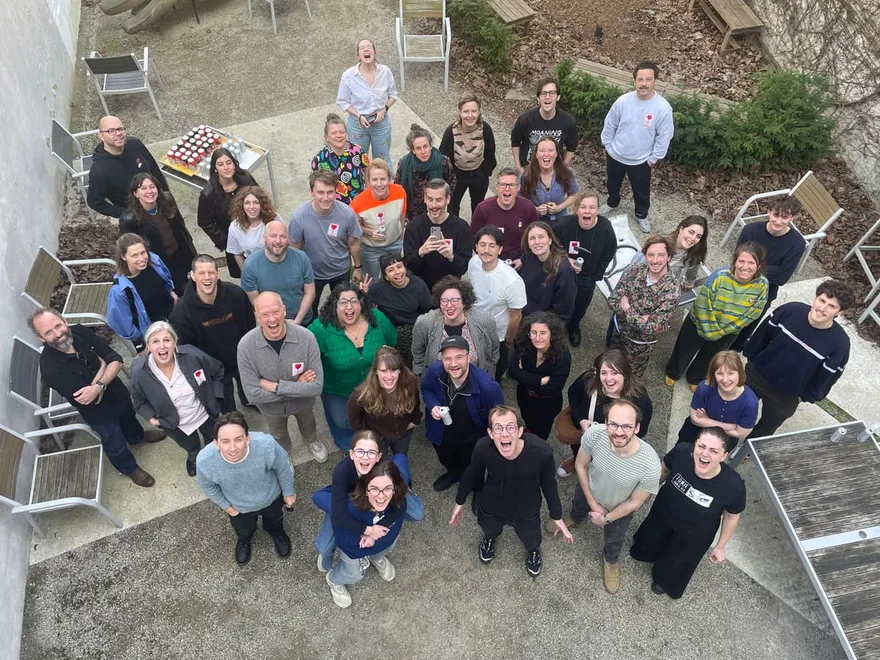

Scroll inside this preview. The whole photograph grows as it comes into view, then settles at its full width.

Makers and organisers at the 2026 Brussels edition.
Watch the BRUZZ report from the 2023 edition
More from past editions on Instagram
Concept only. The live site's colour reveal stays a separate hover, tap and keyboard interaction. Reduced-motion mode shows the full-size photograph throughout.